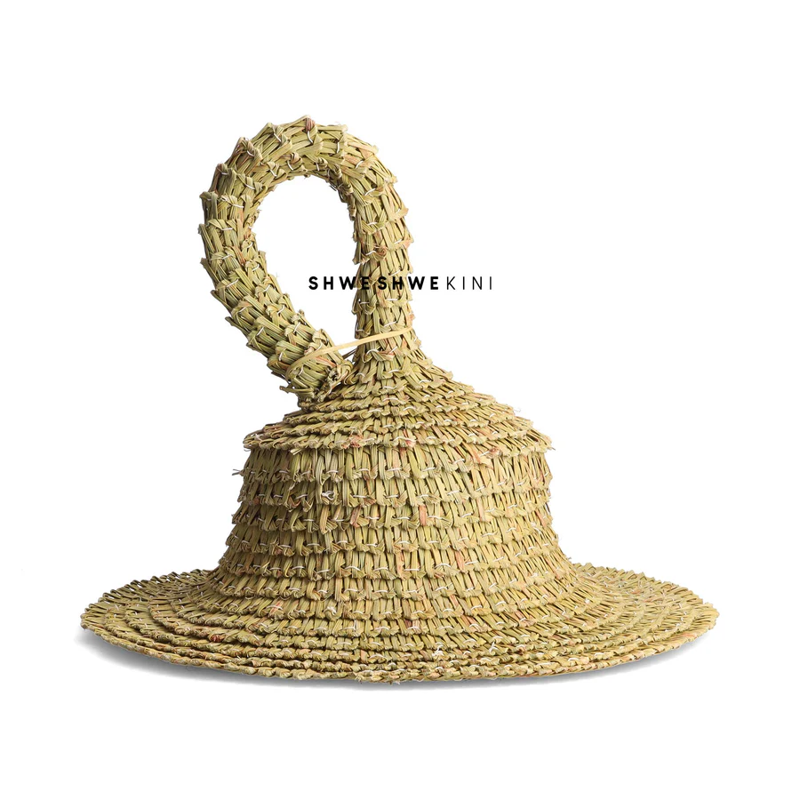

The basotho blanket that was wore by Basotho-women on funiral or firstivals(rope sa motsoetse)
The blanket that was wore by king Moshoeshoe 1 when he was from initiation(
letlama)

The Basotho blanket that is wore by elders both male and female(Seanamarena)
The basotho blanket that was wore by Basotho-women on funiral or firstivals(seanamarena)
The Basotho blanket that is wore by the Kings of Lesotho when go to funirals(Lehlosi
The Basotho mini blanket that is wore by women who are married to show respect(tjale)
Te Basotho ttraditioonal clothing wore by trsditional doctors(ngaka ea setso)
The blanket givien as a gift to men that just arrived from initiation school, as a welcome(Seanamarena)
The blanket that was wore by king Moshoeshoe 1 when he was from initiation(
letlama)

The Basotho blanket that was wore by old major of Lesotho during ferstivals(Qibi)
The Basotho hat that represent the Qilloane Mountain found in Maseru(Mokorotlo)
The Basotho sunhat that is made out grass that was made to protect from sunlight on summer times(Ts'ets'e)
The Basothe hat that was wore by traditional doctors made from animal skin(
Kuooane)

The Basotho sunhat that was made by shepherds to over come stress when they are looking after the cows(Ts'ets'e)
The Basotho sunhat that was made by shepherds to over come stress when they are looking after the cows
he Basotho dress wore by women on festivals or funirals(
seshoeshoe)

he Basotho dress wore by women on festivals or funirals(seshoeshoe)
The Basotho dress wore by women on festivals or funirals(seshoeshoe)
The Basotho dress that eas wore by old married women from cowskin(
mose oa khomo)

The Basotho dress made from maize meal bad used to dance Litolobonya(mose)
The Basotho dress that was wore by teernagers girls to play selialia(thethana)
The Basotho dress that eas wore by old married women from cowskin(
mose oa khomo)

The Basotho mini blanket that is wore by women who are married to show respect(tjale)
The Basotho traditional way of decorating boys from initiation(Lekoloane)
The Basotho blanket that was and still wore by boy after initiation(libai)
The Basotho cloth that was wore by teernagers boy to play selialia(Ts'ea)
The Basotho dress that was wore by teernagers girls to play selialia(sefaha le thethana)
The Basotho hat that represent the Qilloane Mountain found in Maseru(Mokorotlo)
The Basotho shoes that were wore by elder to protect from small stone on ground(lifatla)
The Basothe hat that was wore by traditional doctors made from animal skin(
Kuooane)

.